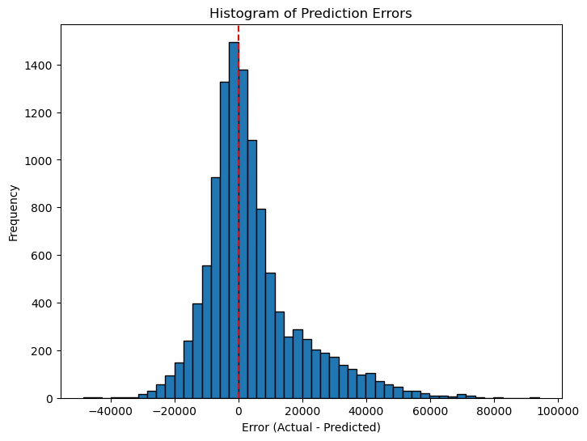

Problem
Auction buyers and sellers need a practical way to estimate equipment value from historical sale records. The goal: predict sale price from equipment attributes, sale timing, machine metadata, and listing details.
Data
412,698 auction records from the Kaggle Blue Book for Bulldozers competition — real-world heavy-equipment sales with dozens of categorical configuration fields and substantial missingness. Per Kaggle's terms the raw data is not redistributed in the repo; the README documents how to place the competition files locally to reproduce every result.
Method
- Parse sale dates and engineer year, month, day, day-of-week, and day-of-year features.
- Encode categoricals numerically and add a missingness indicator column per field — treating "this value was never recorded" as information rather than noise.
- Fill numeric gaps with medians.
- Split validation by sale year, not randomly — the model is always judged on selling the future, never on memorizing it.
- Compare Random Forest and XGBoost; tune XGBoost; evaluate with MAE, RMSLE (the Kaggle competition metric), and R².
Results
| Metric | Validation result |
|---|---|
| MAE (average dollar error) | about $10,480 |
| RMSLE (competition metric) | 0.398 |
| R² | 0.648 |

What mattered — the interesting part
The model's strongest signals aren't horsepower or age. They're missingness fields: whether the listing bothered to record a scarifier, a coupler system, a product size. Incomplete records line up with older, less-documented, lower-value equipment — so listing completeness itself carries pricing signal. For a business, that finding changes data-collection policy, not just the model.

Reproducibility
The notebook is the narrative artifact; a command-line training wrapper (src/train.py) reruns the tuned model outside it, logging parameters, metrics, feature importance, predictions, and the fitted model to MLflow. A Dockerfile makes the whole training run a one-line container command. If it can't be rerun from a fresh clone, it isn't done.
Takeaway
A real dataset, a practical pricing problem, time-aware validation, model comparison, and interpretable results — with deliberate restraint: Spark was evaluated and rejected because the data fits in memory, and Docker + MLflow were chosen instead because they improve reproducibility without changing the project's goal.
Limitations
- Results are validation-split metrics, not competition leaderboard scores on the hidden test set.
- The competition data ends in the early 2010s — patterns learned here describe that market era.
- Median imputation is deliberately simple; the missingness indicators carry the signal instead.
Next improvements
- Move the notebook and saved outputs fully into the project folder.
- Add a small saved-output sample after a local Kaggle rerun.